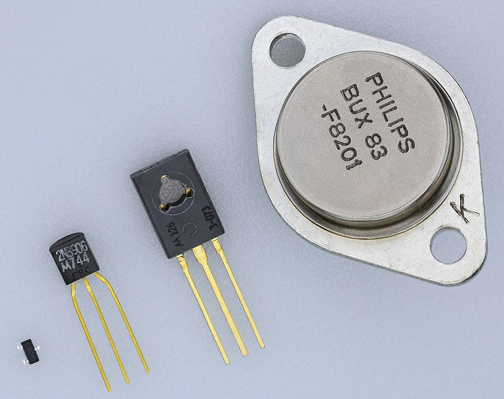
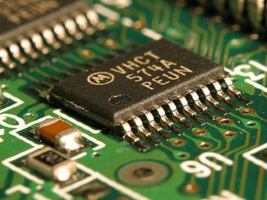
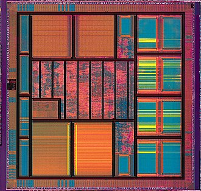

HW2 <<
Previous Next >> Final Project
HW3
說明從 1950 年至 2020 年從 2D CAD 至目前常見的 3D 套件發展分別具備哪些功能與特性。
第一代1946-1958
使用元件:真空管
軟體:機器語言或組合語言
在1950年代早期的電腦繪圖 (CG，ComputerGraphics) 萌芽初期，
電腦本身仍屬於初始的技術研發階段，
大致是應用於科學運算的模擬運作，如太空飛行、軍事演模擬等
此時的電腦繪圖僅限於數字的運算和科技的使用範圍，
經過電腦的輸出入方法進一步的發展可以直接處理視覺性的圖形之後，
電腦開始引起了一些從事藝術工作者的注意，
於是利用電腦從事藝術創作的活動便逐漸的活躍了起來。
第二代1959-1964
使用元件:使用電晶體
軟體:高階語言或等來設計應用程式

在1960年代在美國波音公司的研究報告中出現了「電腦繪圖」。
這一時期大部分藝術家停在觀望的腳步，
主要電腦繪圖的研究人員仍是科學家，
由於在發展的初期電腦繪圖必須由人設計程式的方式展現，
操空介面人性化程度低，
此階段所呈現的作品以點線面的變化為主，
此時的作品以數學運算為基礎，
在呈現上非常難以直觀與具體的控制呈現，
直到數位描繪板的發明，
電腦繪圖對使用者而言可以說是劃時代的突破。
第三代1965-1970
使用元件:使用機體電路IC
軟體:繼續發展簡易的高階語言，使用作業系統與套裝軟體是本階段的重要特色

第四代1971-今日
使用元件:使用大型機體電路LSI或使用超大型機體電路VLSI
軟體:以功能導向接近自然語言的第四代電腦語言

1970年代以後，在電子科技的強勁發展中產生了功能強大的「超大型積體電路」，
之後產生的第四代電腦不斷升級發展，個人微電腦時代已經來臨了，
此時期由於電腦體積縮小了許多，也不再是高價電腦時代。
自1984年美國蘋果電腦公司發展麥金塔電腦系統以來，
短短十年間，設計者對此軟硬體之神奇著迷不已，
改變了設計者之思考及工作方式，我們稱為電腦革命。
多媒體時代的來臨也是一個明顯的發展，這種整合科技應用在藝術上的表現方式，
就是把攝影、電影、通訊、視訊、音樂、表演等特殊的專業知識結合電腦一起運用，
此時的電腦藝術創作，已經跳離了單人的藝術創作層面，而進入集體創作的型態。
現今的電腦繪圖發展多彩多姿，
虛擬實境技術發明、娛樂遊戲方面、設計與藝術方面、醫療方面、軍事科技方面等，
上述只是電腦繪圖在今日的部分應用，
電腦繪圖正改變人的圖文傳播與呈現方式，
可預期電腦繪圖在未來的發展中，
只要是有關圖文的產業發展，
絕對是成為非常重要的工具之一，
電腦繪圖的發展與知識將會成為在人類歷史中重要的一環。
在 Generative Design 與 Deep Reinforcement Learning 的帶動下，未來的 3D CAD 可能會有何種樣貌?
HW2 <<
Previous Next >> Final Project